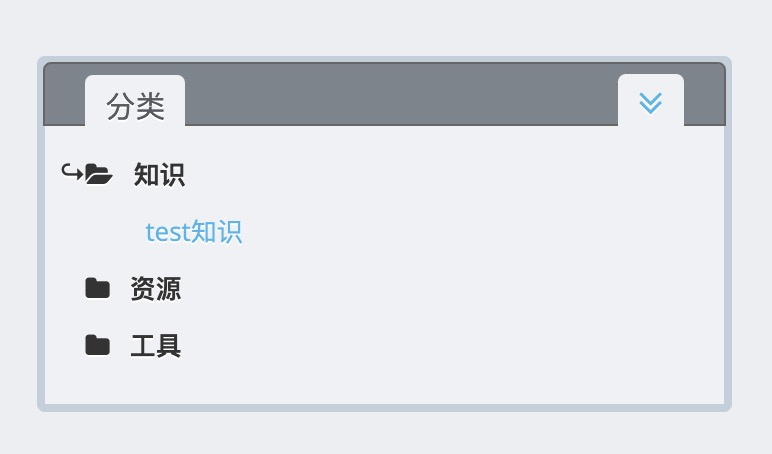

如何贡献一篇文章?
*本质上该站点是开源到互联网上的，请注意上传的内容不要涉及科研、工业敏感数据，做好权限管理
1. 安装hexo静态博客生成工具
根据官方指引文档进行安装，注意node js的版本最好为16.x
2. clone知识库源文件到本地
知识库采用源文件和站点文件分离的形式，均存放于github中DSIS-SCSS组织账户的仓库中，需要添加/修改文章时，只需要对源文件仓库进行操作，实际上源文件仓库即是一个hexo构建环境，可以直接在其中利用相关命令进行操作，如果你已经安装了hexo，并且对其感兴趣的话，可以参考hexo命令，当然如果只是贡献文章，是不需要了解这些命令的。
- 源文件仓库: https://github.com/DSIS-SCSS/dsis-scss-source
- 站点仓库: https://github.com/DSIS-SCSS/dsis-scss.github.io
将源文件仓库clone到本地： 1
$ git clone https://github.com/DSIS-SCSS/dsis-scss-source.git
3. 本地运行
假设项目文件夹的路径为<root>，即从github上clone/pull下来的repo文件夹
如果已经安装了hexo，并且成功clone下来了源文件仓库，那么可以执行以下指令
1 | $ cd <root> |
首先安装npm依赖包，依赖包meta位于
package.json中，不要随意修改 由于需要渲染
latex公式，因此需要pandoc环境，可以于https://github.com/jgm/pandoc/releases/下载安装可以执行以下命令在本地启动hexo服务，成功执行后，在http://localhost:4000/即可访问站点
1 | $ hexo clean |
在4000端口运行的服务是一个持续监听服务，成功启动后，如果对文件进行修改（文章/配置）并保存，则会实时呈现到浏览器中，不需要手动重新构建
3. 写作
创建新文章
假设项目文件夹的路径为<root>，即从github上clone/pull下来的源文件仓库
你可以执行下列命令来创建一篇新文章（新的页面） 1
2$ cd <root>
$ hexo new <title><title>
为文章的标题，注意如果标题存在空格则需要使用引号“包括起来
运行该命令，在<root>/source/_posts下会自动生成一个markdown源文件YYYY-MM-DD<title>.md
即可开始在该文件中使用markdown语法编写文章
指定类别（categories）
在每一个.md文件的最开头，都有着如下类似的Front-matter
当你通过hexo new命令生成新的文章时，按照模板，会产生携带如下开头的.md文件
1 | --- |
其中categories标签是用来指定文章所属的类别的（注意:后面有一个空格），目前支持的第一大类别有
- 知识
- 工具
- 资源
请在发布文章之前确认其所属的categories标签被正确的指定为了上述三种之一，否则文章可能不会被正常显示在网页上
如果正确配置了文章的类别，那么这篇文章就会出现在对应的侧边栏的树形目录中

同时，侧边栏的树形目录支持多级categories指定，例如，在Front-matter中如下指定，即可实现多级目录
1 | --- |

插入图片
优化了两种比较方便的嵌入图片的方式 - 通过typora+图床的方式实现 在
typora-设置-图像
中可以配置上传服务，当配置了上传服务后，每当向typora中粘贴图片时，图片也会被同步上传到一个云端的数据库中，并且生成一个url地址，由于这个地址在云端，因此可以直接将typora中的源代码复制到新文章的源文件中，图片可以正常访问
 - 通过直接向repo中传入图片的方式实现
当你通过
- 通过直接向repo中传入图片的方式实现
当你通过hexo new命令生成新的文章时，在<root>/source/_posts下会生成一个与.md文件同名的目录，将
图片复制到这个目录中，即可通过间接路径访问它
例如我需要嵌入入一张图片logo.png到文章test工具中
1
2cd <root>/source/_posts/test工具
cp <path_to_logo.png> ./1

直接使用markdown
1 |  |
使用html完成缩放 1
2
3
4<img src="5.jpeg"
width="100"
height="100"
/>
4. 部署发布
在本地完成写作，在本地hexo服务中调试没有格式问题后，可以push源文件仓库到github中
首先保证本地可以提交代码到github
已经添加了本地的ssh公钥到账户github设置
账户已经加入到DSIS-SCSS小组中，有对dsis-scss-source这个仓库的commit权限
然后只需要简单的在本地完成修改后，add/commit/push即可：
1 | $ cd <root> |
这个源文件仓库实现了Github Action CI，在向dsis-scss-sourcepush后，会自动在云端实现hexo generate、hexo deploy等操作，将生成的public文件夹push到站点仓库dsis-scss.github.io
自动化部署的log和结果可以在仓库-Action中看到
部署成功后，等待几分钟，即可访问https://dsis-scss.github.io/，观察线上效果